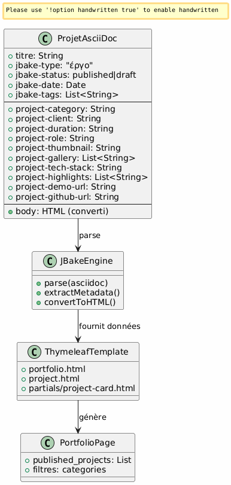
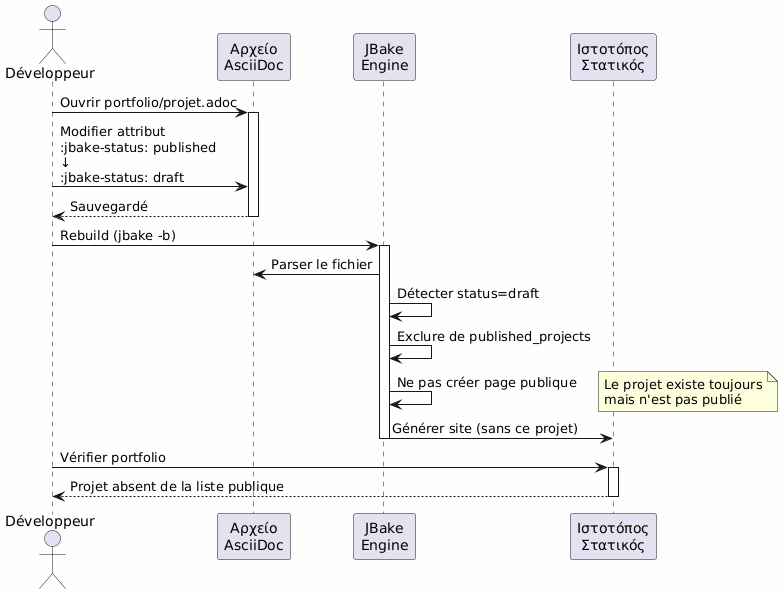
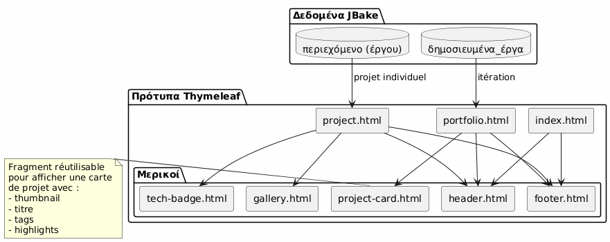
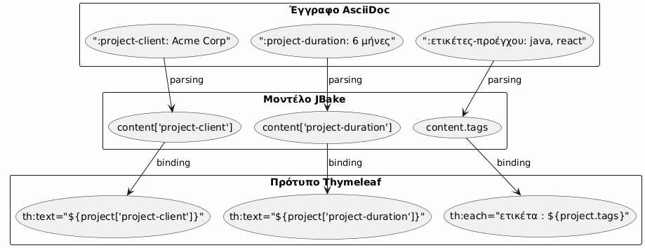
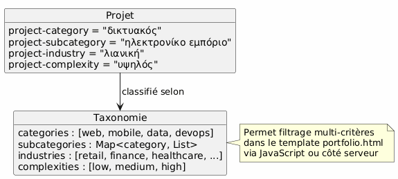

Αρχιτεκτονικό Portfolio JBake - Οπτική και Περίπτωσεις Χρήσης
Publié le 15 January 2026
- Αρχιτεκτονική όραση
- Οδηγίαρχός? Wait check best translation: "Principle director" used often as "καιρός"? Let’s think: "principe directeur" in law/management is "guiding principle". Usually Greek phrase: "οδηγίαρχος?" Not common. I’d choose "καθοδηγητική αρχή". That seems accurate.
- Στρατηγική επιλογή : AsciiDoc για το πορτφόλιο
- Μοντέλο δεδομένων
- Λεπτομερείς περιπτώσεις χρήσης
- Αρχιτεκτονική Templating
- �Ροή εργασίας δημοσίευσης
- εκτασιμότητα
- Καλές Πρακτικές
- Συμπέρασμα
Αρχιτεκτονική όραση
Οδηγίαρχός? Wait check best translation: "Principle director" used often as "καιρός"? Let’s think: "principe directeur" in law/management is "guiding principle". Usually Greek phrase: "οδηγίαρχος?" Not common. I’d choose "καθοδηγητική αρχή". That seems accurate.
Thus output exactly: καθοδηγητική αρχή
No extra spaces at ends.
Proceed.
</think>
καθοδηγητική αρχή
Η αρχιτεκτονική βασίζεται στο αρχέγονο του διαχωρισμού των ανησυχιών :
-
Περιεχόμενο : οργανωμένα αρχεία AsciiDoc με πλούσια μεταδεδομένα
-
Παρουσίαση : πρότυπα Thymeleaf επαναχρησιμοποιήσιμα
-
Δεδομένα : μοντέλο εξαγόμενο αυτόματα από το JBake από τα χαρακτηριστικά AsciiDoc
-
Στυλ : Bootstrap 5 για τη οπτική συνέπεια
Στρατηγική επιλογή : AsciiDoc για το πορτφόλιο
| Κριτήριο | Πλεονέκτημα |
|---|---|
Συμφωνία |
�Ίδιος μορφος όπως τα άρθρα του blog |
Μεταδεδομένα |
Δομημένα και επεκτάσιμα χαρακτηριστικά ( |
συντήρησις |
Απλή επεξεργασία κειμένου, εκδόσιμη με Git |
ευελιξία |
Μπορεί να περιέχει πλούσιο περιεχόμενο (πίνακες, κώδικας, εικόνες) |
Πρότυπο |
JBake εξάγει αυτόματα τα χαρακτηριστικά για το Thymeleaf |
Μοντέλο δεδομένων
Κάθε portfolio project είναι ένα έγγραφο AsciiDoc με:
-
Μεταδεδομένα κεφαλίδας : δομημένες πληροφορίες (πελάτης, διάρκεια, τεχνολογίες κ.λπ.)
-
Σώμα του εγγράφου : περιγραφή αφηγηματική, προκλήσεις, λύσεις, αποτελέσματα
-
Προσαρμοσμένα χαρακτηριστικά : προθεσμένα`project-*`για αυτόματη εξαγωγή

Λεπτομερείς περιπτώσεις χρήσης
UC1 : Προσθέστε ένα στοιχείο στο πορτοφολιο
ονομαστική ροή
Failed to generate image: PlantUML preprocessing failed: [From <input> (line 4) ] @startuml skinparam backgroundColor #FEFEFE actor Développeur as dev participant "Επεξεργαστής ^^^^^ Syntax Error? (Assumed diagram type: sequence) @startuml skinparam backgroundColor #FEFEFE actor Développeur as dev participant "Επεξεργαστής Κείμενο" as editor participant "Αρχείο AsciiDoc" as file participant "JBake\nΜηχανή" as jbake participant "ιστότοπος στατικός" as site dev -> editor : Créer nouveau fichier activate editor editor -> file : portfolio/nouveau-projet.adoc activate file dev -> editor : Rédiger en-tête avec métadonnées\n(titre, type=project, status=published,\nattributs project-*) dev -> editor : Rédiger contenu narratif\n(contexte, défis, solutions) dev -> editor : Ajouter images dans assets/img/portfolio/ editor -> file : Sauvegarder deactivate editor dev -> jbake : Lancer build (jbake -b) activate jbake jbake -> file : Lire et parser jbake -> jbake : Extraire métadonnées jbake -> jbake : Convertir AsciiDoc → HTML jbake -> jbake : Appliquer template project.html jbake -> jbake : Ajouter à la liste portfolio.html jbake -> site : Générer pages statiques deactivate jbake dev -> site : Vérifier résultat activate site site --> dev : Afficher projet deactivate site @enduml
Πρότυπο αρχείου που θα δημιουργηθεί
Ο προγραμματιστής δημιουργεί`content/portfolio/nom-projet.adoc`με μια προτυποποιημένη δομή :
-
Κεφαλίδα με όλα τα απαιτούμενα χαρακτηριστικά
-
Τυποποιημένες ενότητες (Περιβάλλον, Προκλήσεις, Λύσεις, Αποτελέσματα)
-
Συνεπής ονομασία των εικόνων
Σημεία επικύρωσης
-
Τα υποχρεωτικά χαρακτηριστικά υπάρχουν (
jbake-type,jbake-status,project-thumbnail) -
Οι αναφερόμενες εικόνες υπάρχουν σε`assets/img/portfolio/`
-
Η JBake build ολοκληρώνεται χωρίς σφάλματα.
-
Το project εμφανίζεται στη σελίδα του portfolio.
-
Η ατομική σελίδα του έργου εμφανίζεται σωστά
UC2 : Διαγραφή ενός στοιχείου από το πορτοφολιού
Ονομαστική ροή
Failed to generate image: PlantUML preprocessing failed: [From <input> (line 4) ] @startuml skinparam backgroundColor #FEFEFE actor Développeur as dev participant "Σύστημα ^^^^^ Syntax Error? (Assumed diagram type: sequence) @startuml skinparam backgroundColor #FEFEFE actor Développeur as dev participant "Σύστημα Αρχεία" as fs participant "JBake\nΜηχανή" as jbake participant "Ιστότοπος στατικό" as site database "Κατάκεντρο\nJBake" as cache dev -> fs : Supprimer portfolio/projet-ancien.adoc activate fs fs --> dev : Fichier supprimé deactivate fs dev -> fs : (Optionnel) Supprimer images associées\nassets/img/portfolio/projet-ancien-* activate fs fs --> dev : Images supprimées deactivate fs dev -> cache : Nettoyer cache JBake activate cache cache --> dev : Cache vidé deactivate cache dev -> jbake : Rebuild complet (jbake -b) activate jbake jbake -> jbake : Scanner content/portfolio/ jbake -> jbake : Projet absent → non généré jbake -> jbake : Régénérer portfolio.html\n(sans le projet supprimé) jbake -> site : Déployer nouveau build deactivate jbake dev -> site : Vérifier activate site site --> dev : Projet absent de la liste deactivate site @enduml
Εναλλακτική στρατηγική : αρχειοθέτηση
Αντί να διαγράψετε οριστικά, υπάρχει η δυνατότητα να δημιουργήσετε ένα φάκελο`content/portfolio/archive/`:
-
Μετακίνησε το αρχείο αντί να το διαγράψεις
-
Επιτρέπει εύκολη αποκατάσταση
-
Κράτε το ιστορικό του Git πιο καθαρό
Καθαρισμός των πόρων
-
Ελέγξτε τις ορφανές εικόνες σε`assets/img/portfolio/`
-
Διαγραφή εικόνων που δεν αναφέρονται από άλλα έργα
-
Καθαρίστε το cache του JBake για να αποφύγετε τις ανεμφανείς αναφορές
UC3 : Ορισμός ως μη δημοσιευμένο (draft)
ονομαστική ροή

Πιθανές καταστάσεις

Τυπικές περιπτώσεις χρήσης
-
Έργο υπό επεξεργασία : Δημιουργία σε προχειρό, δημοσίευση όταν είναι έτοιμο
-
Προσωρινά μυστικό έργο : να περάσετε σε πρόχειρο για τη διάρκεια της σύμφωνης με τον πελάτη
-
Μεγάλη ενημέρωση : να μεταβείτε σε σχέδιο, να τροποποιήσετε, να δημοσιεύσετε ξανά
-
A/B testing : απλώνεται σε σχέδιο, δοκιμάζεται, δημοσίευση της καλύτερας έκδοσης
Αρχιτεκτονική Templating
Στρατηγία ανχυρῶν προτύπων

Πρότυπο εξαγωγής δεδομένων
JBake μετατρέπει αυτόματα τα χαρακτηριστικά AsciiDoc σε ιδιότητες προσβάσιμες στο Thymeleaf :

Συμβάσεις ονοματοδότησης
-
Ιδιότητες έργου : πρόθεμα`project-*` (ex:
project-client,project-tech-stack) -
Αρχεία : kebab-case (π.χ.
ecommerce-platform.adoc) -
Images : πρόθημα όνομα-έργου (π.χ:`ecommerce-platform-thumb.jpg`)
-
Πρότυπα : λειτουργικό όνομα (ex:`project-card.html`,
tech-badge.html)
�Ροή εργασίας δημοσίευσης
Δρομός ανάπτυξης
Περιβάλλοντα
| Περιβάλλον | Χρήση | Κατάσταση αποδεκτή |
|---|---|---|
Τοπικός |
Ανάπτυξη και προεπισκόπηση |
πρόχειρο, δημοσιευμένο |
παρασκευή |
Επικύρωση προπαραγωγής |
δημοσιεύτηκε μόνο |
Παραγωγή |
Δημόσιος ιστότοπος |
μόνο δημοσιευμένο |
εκτασιμότητα
Προσθήκη νέων χαρακτηριστικών
Για να πλουσιεύσετε το μοντέλο δεδομένων, απλώς προσθέστε νέα χαρακτηριστικά με πρόθεμα`project-*`:
-
project-awards: Βραβεία και αναγνωρίσματα -
project-testimonial: πρόταση πελάτη -
`project-team-size`Μέγεθος ομάδας
-
`project-budget-range`Εύρος προϋπολογισμού
Αυτοί οι χαρακτηριστικοί γίνονται αυτόματα διαθέσιμοι στα πρότυπα χωρίς τροποποίηση του μηχανισμού JBake.
Προηγμένη κατηγοριοποίηση

Καλές Πρακτικές
Οργάνωση των αρχείων
-
Ένα αρχείο = ένα έργο : αποφύγετε το να ανακατέψετε πολλά έργα
-
Εικόνες σε αfiερωμένο φάκελο
assets/img/portfolio/nom-projet/ -
Συνεπής ορολογία : διευκολύνει την αναζήτηση και τη συντήρηση
-
Versioning Git : πλήρης παρακολούθηση των αλλαγών
Διαχείριση περιεχομένου
-
Προεπιλεγμένη κατάσταση προτύπου : να δημοσιεύεται μόνο όταν είναι έτοιμο
-
Επιθεώρηση πριν τη δημοσίευση : επικύρωση ποιότητας και μυστικότητας
-
Πλήρη μεταδεδομένα : Συμπληρώστε όλα τα σχετικά πεδία
-
Πλούσιο διηγηματικό περιεχόμενο : μην περιορίζεστε στα μεταδεδομένα
Απόδοση
-
Βελτιστοποίηση εικόνων : συμπίεση πριν το commit
-
Σελιδοποίηση αν χρειάζεται : αν >20 έργα
-
Φόρτωση καθυστέρευσης : εικόνες των γκαλερίων φορτίζονται όταν απαιτούνται
-
Πρόσκαιρο περιηγητή : αποδεκτό headers για τα assets
Συμπέρασμα
Αυτή η αρχιτεκτονική επιτρέπει:
-
Ευκολία χρήσης : προσθέστε ένα έργο = δημιουργήστε ένα αρχείο κειμένου
-
Ευελιξία : εκτάσιμος μέσω νέων χαρακτηριστικών
-
Συντήρησις : διαχωρισμός περιεχομένου/παρουσίασης
-
Παρακολούθηση : πλήρες versioning Git
-
Αυτοματοποίηση : build και συνεχείς ανάπτυξες εφικτές
Η επιλογή του AsciiDoc ασφαλίζει τη συνέπεια με το υπόλοιπο του ιστοτοπίου, προσφέροντας τον πλούτο των απαραίτητων μεταδεδομένων για ένα επαγγελματικό portfolio.